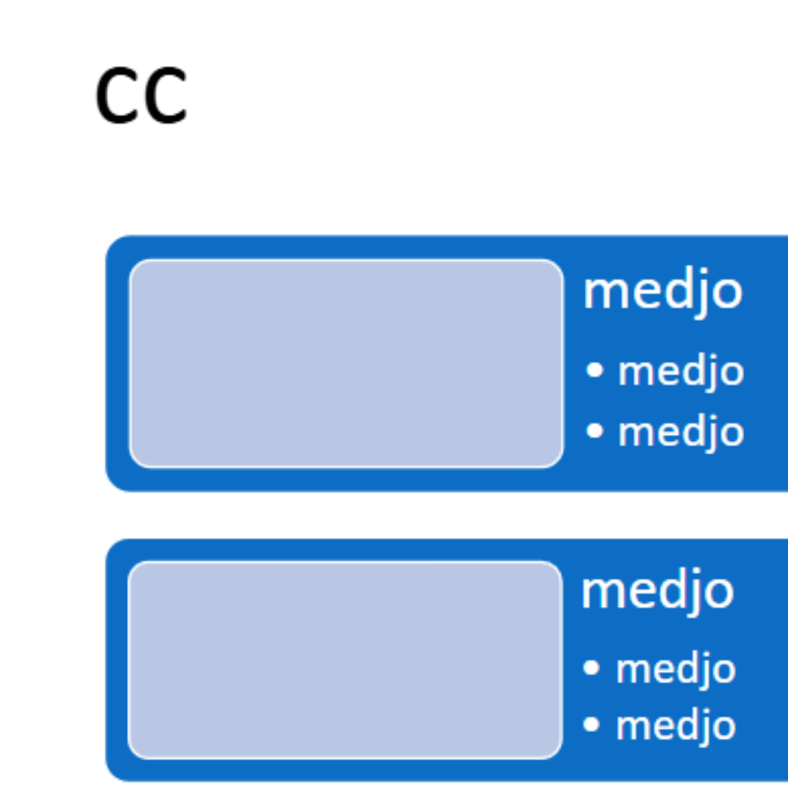
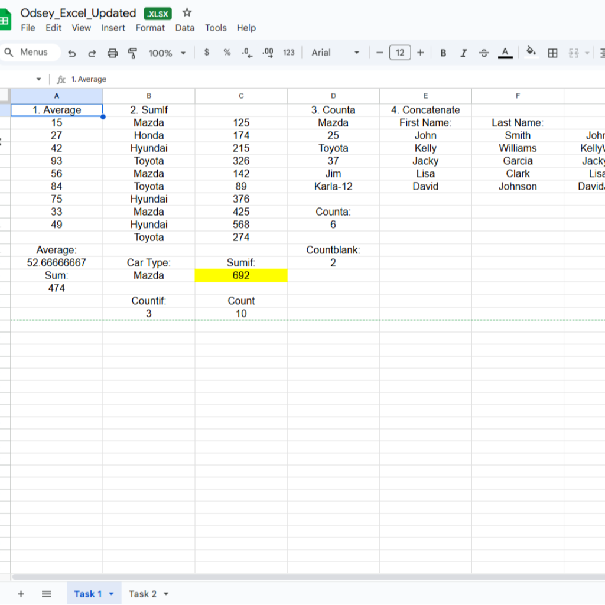
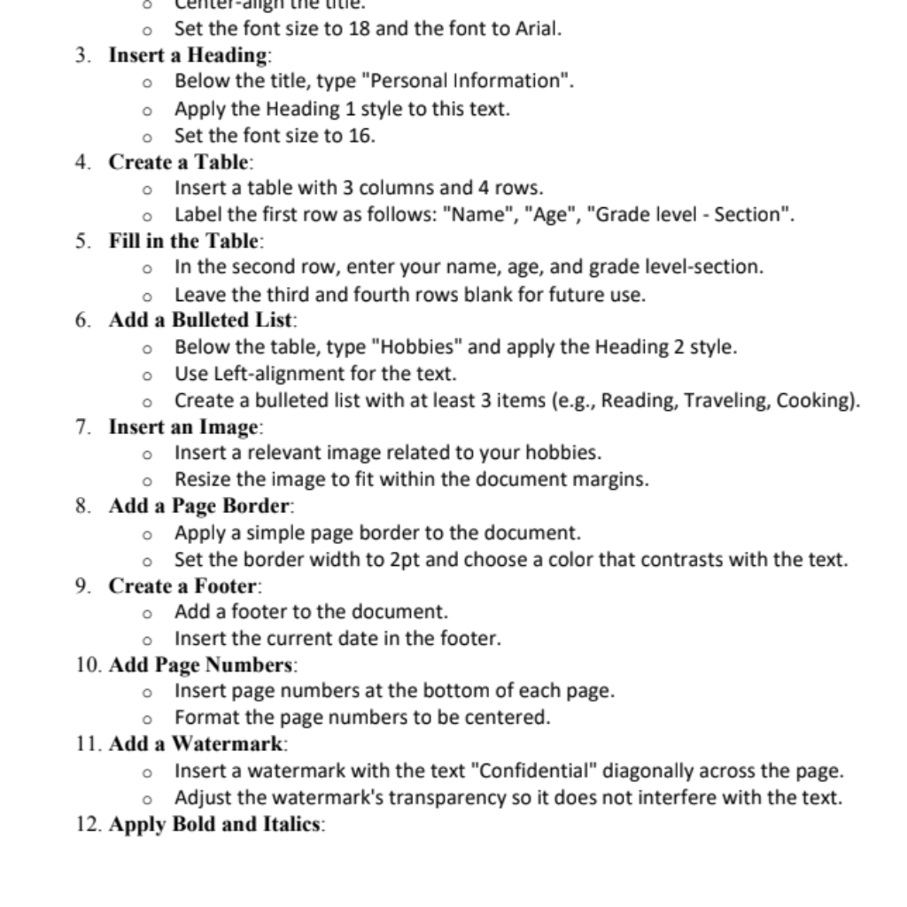

Power Point Activity
Made a PowerPoint presentation by designing slides, layouts, texts, images, and animations to convey information.

Excel Activity
Used Excel to organise and analyse data using tables, charts, graphs, formulas, and formatting to visualise data better.
Website 1
Learned how to use Visual Studio Code to code my own website about a tourist website in Tokyo.
Website 2
Applying my knowlege from the first website, made a second tourist website in Kyoto.
ICT Related Careers
Made a PowerPoint explaining ICT related jobs and careers.
Microsoft Liteacy Certificate
Took an online course and tests to learn more about Microsoft.

Wifi-101 Certificate
Took an online course and tests to learn about Wi-Fi.

Microsoft Liteacy Certificate
Followed instructions to make a formal dosument using MS word or GDocs as a practical exam.
About Me
10-Samech Vice Mayor
Child of God
I can do all thing through Christ who stregthens me. -Philippians 4:13